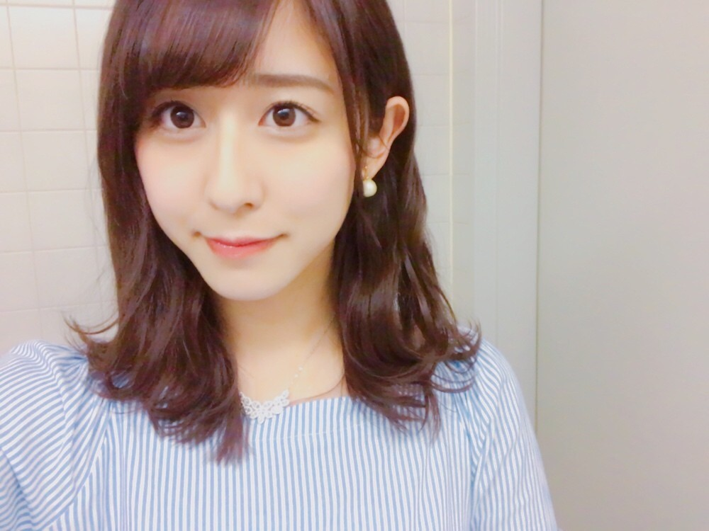
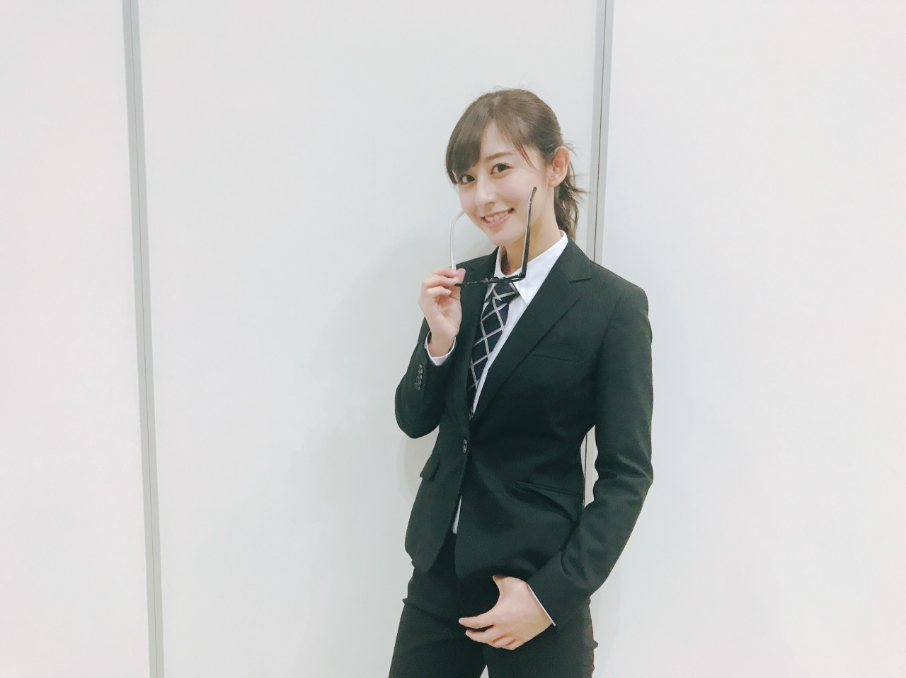

| 2017/04 25 Tue | Answer |
ちはるーむへようこそ
今日のちはるーむではドラマ、クライシスを見ました。
今日は拾得物の日。
1980年のこの日、銀座で現金1億円の
落し物が見つかったことに因んでだ。
結局落とし主は現れず拾い主の手に渡った。
なんて凄い事件だろう
もし１億円が落ちていたら
夢なのかドッキリなのかと思っちゃいそう笑

自分でも上手くスタイリングが
出来るようになってきて
毎日ヘアアレンジが楽しい
これくらいの長さが
一番色々な髪型できる気がする
女の子にオススメしたい☺︎
！ChihAnswer！
 北のタカさん
北のタカさん
・インフルエンサーのダンスはやっぱり大変だった？筋肉痛になった？
→最初は正直絶対覚えられない！
って思ってた...
でも、元々フリが入っていたかりんが
積極的にみんなに教えてくれて、
先生が来てくれる振り入れの日の前に
みんな大体の形が出来ていたから
先生に直接教わる日は数時間で大丈夫だったよ
その日は筋肉痛になったけど笑
かりん様様でしたヽ(；；)丿
おーるさん
・今回のライブで12人だからこそ大変だったってことはある？
→今までのアンダー曲は大体が16人だったから
全部の曲を作り直さなきゃ
いけなかったのは大変でした
オリジナルポジションのメンバーが
誰1人としていないっていうのは
今までのライブではなかったので...
でも人数が少ない分、
練習の時も自分の姿が必ず鏡で見えていたし
広々とダンスも踊れたし
そういう部分ではとても良かったです！
アキさん
・乃木坂の曲の中で一番大切にしている曲は何ですか？
→自分の中では、やっぱり
選抜に選ばれた何度目の青空か？は
大切にしている曲です。
多分これからもずっと
私の中で特別な曲となると思います。
また、今回のアンダーライブを通じて
風船は生きているは私達にとって
大切な曲になりました
皆さんにとっても。だといいな
みっとさん
・ちーちゃん的に今回のアンダーライブで一番だったっていうシーンはどこ？
→忘れられないのは
初めてのトリプルアンコールで
ステージに上がった時の
皆さんの歓声と熱気です。
私達をこんなに待っていてくれて
こんなに熱くなってくれている事に
物凄く感動しました
ビックリしたけどとても嬉しかった
今日はここまでm(_ _)m
アンダーライブに関しての質問に
答えさせていただきました
またお待ちしています◎
------------------------------------------------♡
♬ ChihaMusic
「モットー。」阿部真央さん
中学の時から今も変わらず
私の背中を押してくれる
大切な曲。
不器用な力強さと共感できる弱さが
私の胸に響く
"ごまかすことに慣れてしまいたくないから
僕はいつまでも もがき歌いつづけてる"
前が見えなくなってもがきつつも
でも決めたことはやめない
あべまさんかっこいいなぁ。
永遠の憧れ！

ピシッとスーツを着て、
キャリアウーマン風ショット
いや、この男らしさ...
withBなのかな？
withBやってみたい...笑
おやすみ
斎藤ちはる
コメント(243)
2017/04/25 23:42